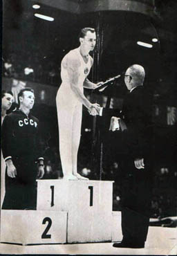

Pavel Stolbov (USSR)
1959 European HB Champion
1958 World R Silver Medalist

Medal Total
Olympic Games: 1 Gold
World Championships: 1 Gold, 3 Silver, 1 Bronze
European Championships: 1 Gold, 2 Silver, 1 Bronze
Pavel was born on August 30, 1929, in Krasny Luch, Ukranian SSR. He began gymnastics at the age of 18 while studying at the Moscow Art Vocational School. A Merited Master of Sport, he trained at the Central Army Sports Club in Moscow. His wife, Tamara, was also a gymnast.
Competition Results
1953
Moscow Championships: 5th AA, 1st FX
1956
Olympic Games: 1st Team, 14th AA, 4th HB
USSR Championships: 1st Team, 5th AA, 1st PH, 1st HB
1957
USSR Championships: 1st Team, 1st AA, 1st HB, 2nd FX
1958
Army Club Spartakiade: 1st Team, 1st AA, 1st PH, 1st HB, 2nd PB, 3rd FX, 3rd R
USSR Championships: 4th AA, 2nd PB, 2nd HB, 3rd PH, 4th FX
World Championships: 1st Team, 5th AA, 2nd PH, 3rd PB,
5th FX, 5th HB
1959
European Championships: 2nd AA, 1st HB, 2nd R, 3rd
PB, 5th FX
USSR Championships: 3rd AA, 1st HB, 2nd R, 3rd PH
USSR Cup: 1st AA
1961
USSR Cup: 2nd AA, 1st R, 1st HB, 6th PH
1962
USSR Championships: 1st HB, 3rd FX, 4th PH
World Championships: 2nd Team, 8th AA, 2nd HB
1963
USSR Championships: 1st Team, 2nd HB
USSR Cup: 2nd HB
1964
USSR Cup: 6th AA, 2nd HB, 6th PB
This page was created on September
03, 2005 and was last updated on Stolbov.
© Gymn Forum